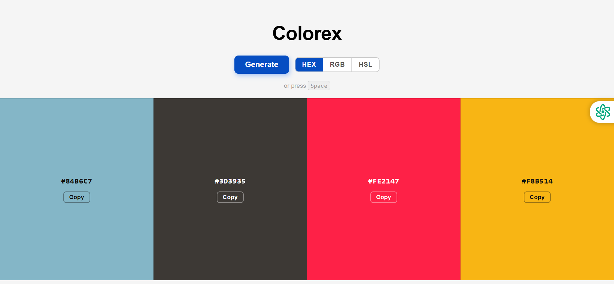
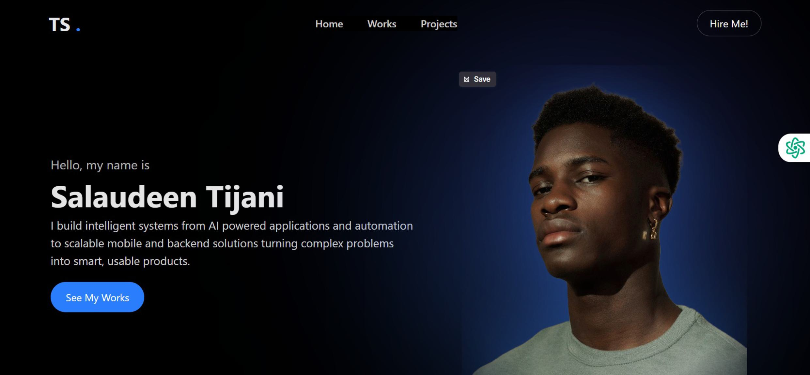

Projects
Bento Grid Layout (from Frontend Mentor)
Created a responsive bento-style grid layout from a design challenge, focusing on CSS Grid, layout structuring, and responsive design.
Html
Css

Color Palette Generator
Built an interactive tool that generates four random color palettes with HEX codes, focusing on JavaScript logic, DOM manipulation, and user interaction.
Html
JavaScript

Client Portfolio Website
Developed a responsive portfolio website using Tailwind CSS, translating client requirements into a clean, functional design
Html
Tailwind